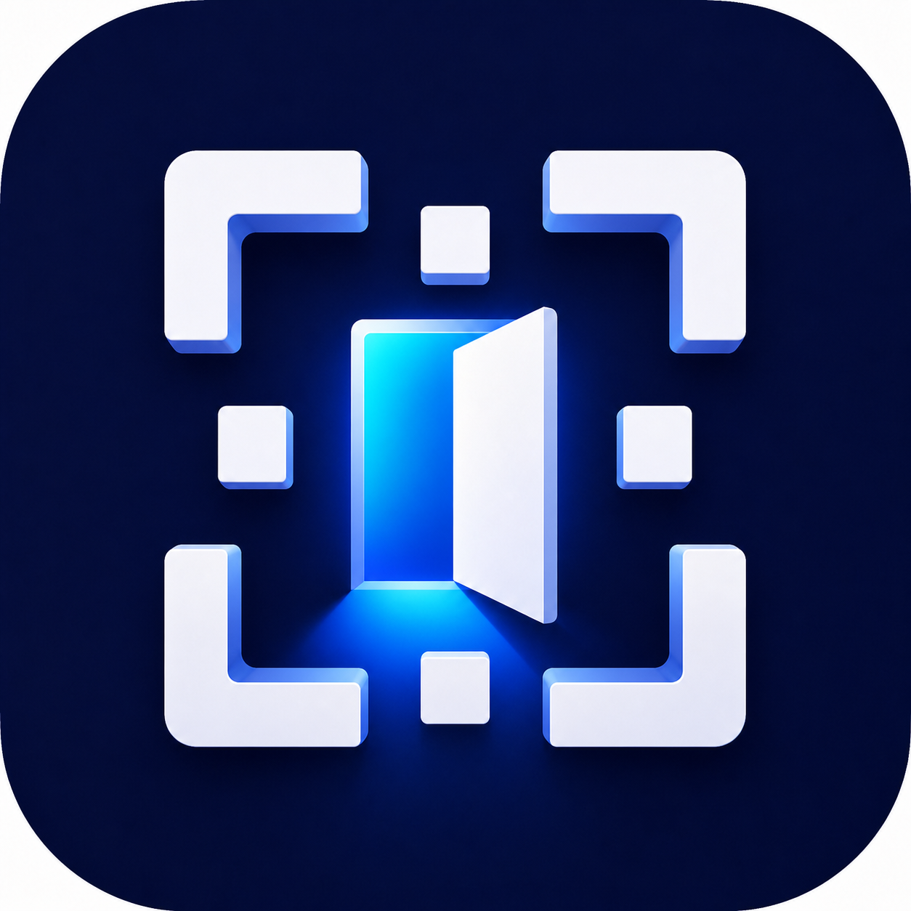

Kapınıza özel QR
Uygulamada dijital zil oluşturun, QR kodunu yazdırın ve kapınıza yerleştirin.

DOQRKapınız için dijital zil
DOQR ile kapınıza özel bir QR kodu oluşturun. Ziyaretçiniz tarayıcıdan zili çalsın, siz uygulamadan yanıtlayın.
App Store’dan indirinElektronik zil veya ek cihaz gerekmez. İnternet bağlantısı gerekir.
Kapınızdaki basılı QR kodu.
02Ziyaretçi uygulama kurmadan tarayıcıdan ulaşır.
03Uygulamada ziyaret bildirimini açın ve mesajlaşın.
Uygulamada dijital zil oluşturun, QR kodunu yazdırın ve kapınıza yerleştirin.
QR kodunu telefon kamerasıyla tarayın ve web sayfasından zili çalın.
Mesajlaşarak yanıtlayın. Pro ile sesli veya görüntülü görüşme için ziyaretçinin onayı istenir.
QR kodu ve bağlantı doğrulanıyor.
QR kodunu yeniden tarayıp tekrar deneyin.
Kısa süreli ziyaretçi oturumunun nasıl çalıştığını özetledik.
Ayrıntılar için Gizlilik Bildirimi sayfasını inceleyin.
Lütfen bu sayfayı açık tutun.